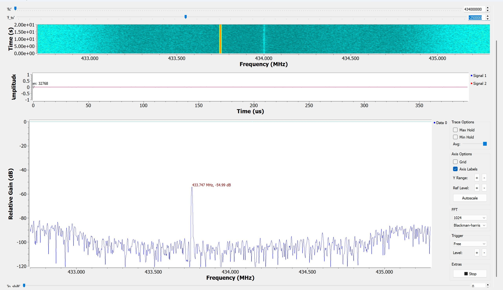
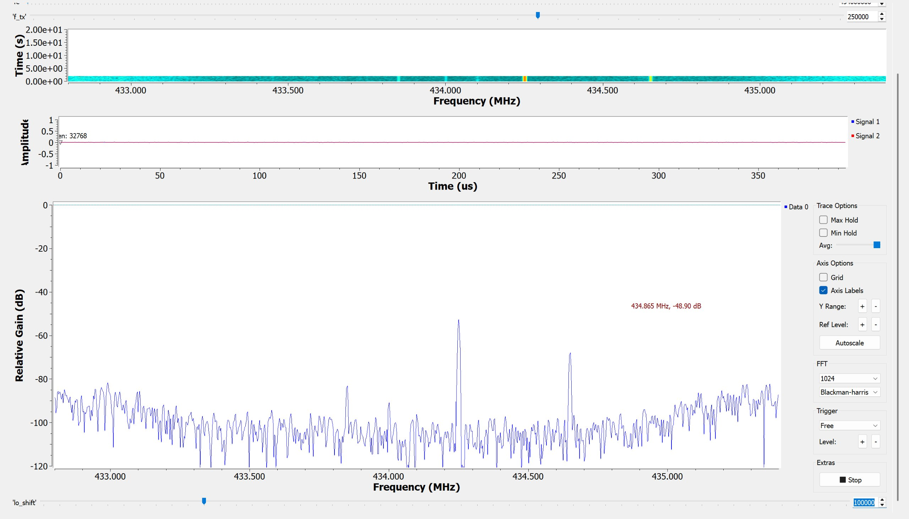
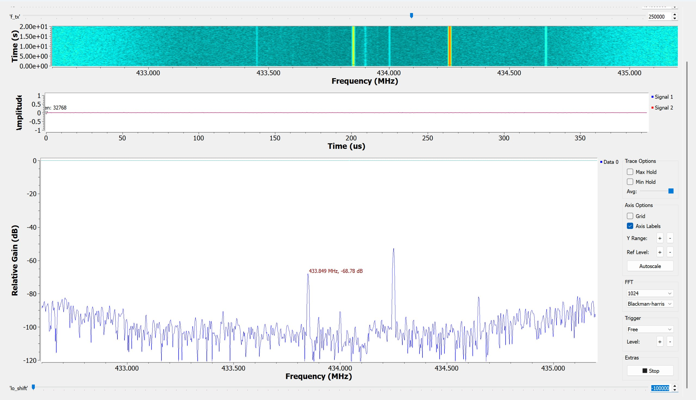
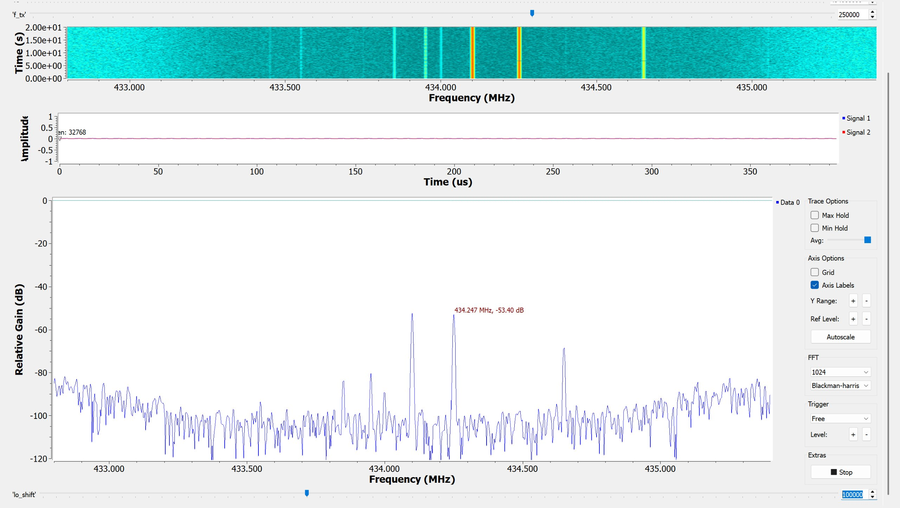

هدف. با فرستادن یک تن مختلط معلوم از TX1 به RX1، محور فرکانس، تمایز فرکانس مثبت و منفی، رفتار قلهها هنگام تغییر LO و اثر تصحیح DC را بررسی کردیم. گزارش حاضر مستقل از بخش اول است و مراحل ۱ تا ۷ بخش دوم و پاسخ پرسشهای ۳، ۴ و ۵ را پوشش میدهد. تنهای مثبت و منفی، سه حالت آزمون LO و آزمون اختیاری DC با همان هشت تصویر ثبتشده مستند شدهاند.
آمادهسازی فلوگراف و اتصال حلقه؛ بندهای ۱ و ۲
فلوگراف پایش را متوقف و نسخهٔ حلقه را با نام lab01_loopback.grc تنظیم کردیم. شاخهٔ Signal Source با خروجی مختلط به PlutoSDR Sink متصل شد؛ شاخههای دریافت، نمایش و ضبط حفظ شدند. تفاوت مهم این است که فرستنده روی ثابت است، ولی گیرنده و مرکز نمایش روی قرار میگیرند؛ در این گزارش است.
| مقدار و نحوهٔ تنظیم | پارامتر |
|---|---|
همان دستگاه بخش اول: PUZHI PZSDR P201PRO، تراشهٔ گزارششدهٔ ad9361 |
سختافزار |
ip:192.168.1.10؛ انتقال داده با LAN |
نشانی اتصال |
| 434 MHz؛ TX LO = int(fc) | مرکز فرستنده |
| 2.6 MS/s در منبع، فرستنده و نمایشگرها | نرخ نمونهبرداری |
| ؛ مرکز هر دو نمایشگر برابر | تنظیم گیرنده |
Complex / Cosine؛ دامنهٔ دیجیتال 0.5؛ فرکانس f_tx |
منبع تن |
| از -1 MHz تا +1 MHz؛ گام 50 kHz؛ مقدار آغازین +250 kHz | کنترل f_tx |
شروع 60 dB؛ بازهٔ مجاز 40–89 dB؛ پارامتر بلوک متصل به tx_att |
تضعیف فرستنده |
| حالت دستی؛ مقدار آغازین 10 dB؛ محدود به 0–10 dB | بهرهٔ RX1 |
| Filter Configuration = Off؛ پهنای باند RF = 20 MHz؛ Cyclic = False در فرستنده | فیلتر و جریان |
| FFT = 1024؛ پنجرهٔ Blackman–Harris در تصاویر | نمایش طیف |
| تصحیح Quadrature فعال؛ هر دو تصحیح RF/BB DC در آغاز فعال | تصحیحهای گیرنده |
اتصال و ایمنی. برای حالت حلقه، پس از توقف فلوگراف آنتن از RX1 جدا و کابل بین TX1 و RX1 بسته شد. ارسال فقط در کابل انجام میشود. با بیشینهٔ تقریبی در دستورکار، کران محافظهکارانهٔ ورودی در تضعیف 60 dB حدود است؛ یعنی 43 dB پایینتر از سقف . حتی در حداقل تضعیف مجاز 40 dB، این کران است. این محاسبه جای اندازهگیری توان کالیبرهشده را نمیگیرد.
اجرای پایه و مقایسه با فرکانس نظری؛ بند ۳
با ، ، و جابهجایی LO صفر، فلوگراف حلقه را اجرا کردیم. مقایسهٔ صریح خواستهشده در دستورکار چنین است:

f_tx = 250000 و lo_shift = 0. نشانگر، 434.252 MHz و سطح نسبی -54.41 dB را نشان میدهد. منبع: 1picture.jpg.بزرگنمایی| مقدار | کمیت |
|---|---|
| 434.250 MHz | فرکانس مورد انتظار |
| 434.252 MHz | عدد خواندهشده از نشانگر |
| +2.000 kHz | اختلاف |
| -54.41 dB | سطح نشانگر؛ نسبی و غیرکالیبره |
دقت خواندن و سطح تن
برای تنظیم ثبتشده، فاصلهٔ خانههای FFT برابر است با اختلاف 2 kHz برابر حدود 0.79 خانه است. علاوه بر شبکهٔ FFT، جای نشانگر ماوس و گردکردن برچسب روی قرائت اثر دارند؛ بنابراین این اختلاف بهتنهایی خطای نوسانساز نیست. کف نزدیک تن در این قاب حدود -100 تا -110 dB است؛ تن تقریباً 45–55 dB بالاتر از آن دیده میشود. این فاصله، برآورد بصری ارتفاع قله نسبت به کف است، نه اندازهگیری نسبت سیگنال به نویز انتگرالی یا توان ورودی بر حسب dBm.
نتیجهٔ اجرا. تن در سمت راست مرکز و نزدیک 434.250 MHz ظاهر شد؛ نتیجه با در دقت قرائت این نما سازگار است.
فرکانس منفی؛ بند ۴
فرکانس تن را به تغییر دادیم و سایر تنظیمات مبنا را حفظ کردیم. در نتیجه، پیشبینی میشود تن از سمت راست مرکز به سمت چپ منتقل شود:

f_tx = -250000 و مرکز 434 MHz. نشانگر 433.747 MHz و -54.99 dB را ثبت کرده است. منبع: 2picture.jpg.بزرگنمایی| اختلاف | نشانگر | نظری | تن | جای تن |
|---|---|---|---|---|
| +2 kHz | 434.252 MHz | 434.250 MHz | +250 kHz | راست مرکز |
| -3 kHz | 433.747 MHz | 433.750 MHz | -250 kHz | چپ مرکز |
برای دیدن ستونهای دیگر، جدول را افقی پیمایش کنید.
تفسیر عددی و آزمون علامت
با تغییر علامت، جابهجایی نظری تن است. تفاضل دو نشانگر است؛ اختلاف 5 kHz این تفاضل حاصل دو قرائت مستقل است و نباید بهعنوان اندازهگیری دقیق فرکانس تعبیر شود. قرائت منفی 3 kHz پایینتر از مقدار نظری است، یعنی حدود 1.18 خانهٔ FFT. با توجه به انتخاب دستی نشانگر، برای تخمین دقیقتر باید از نمونههای خام استفاده کرد.
اختلاف دو سطح نشانگر برابر است با این نزدیکی سطح با ثابتماندن دامنهٔ منبع سازگار است؛ از دو قاب لحظهای نمیتوان تختی دقیق پاسخ دامنه را استنتاج کرد. آبشار نیز جابهجایی خط روشن به سمت چپ مرکز را تأیید میکند.
نتیجهٔ اجرا. آزمون فرکانس منفی انجام شد و گیرندهٔ مختلط دو علامت فرکانس را از هم تفکیک کرد. دلیل نظری آن در پاسخ پرسش ۳ آمده است.
آزمون LO؛ بند ۵
حالت اول: جابهجایی +100 kHz
ابتدا f_tx را به برگرداندیم. سپس فقط جابهجایی گیرنده را به تغییر دادیم؛ فرکانس فرستنده باید روی 434 MHz ثابت بماند.

lo_shift = 100000 با تن مثبت. قلهٔ اصلی نزدیک 434.25 MHz ثابت است. منبع: 3picture.jpg.بزرگنماییمشاهده و مقایسه
قلهٔ اصلی همچنان نزدیک 434.25 MHz دیده میشود، ولی نسبت به مرکز جدید در فاصلهٔ 150 kHz سمت راست قرار دارد. بنابراین جابهجایی مختصات باند پایه، به معنی تغییر فرکانس RF تن نیست: دو قلهٔ جانبی متمایز نیز تقریباً در 433.85 MHz و 434.65 MHz دیده میشوند؛ یک ویژگی ضعیف نزدیک 434.00 MHz نیز با نشت فرستنده سازگار است. این مقدارها قرائت تقریبی از محورند و دقت نشانگر عددی ندارند.
نکتهٔ خواندن تصویر. متن قرمز 434.865 MHz, -48.90 dB در این عکس روی قلهٔ اصلی قرار نگرفته است؛ پس آن را فرکانس یا سطح قلهٔ تن در نظر نمیگیریم. ملاک، مکان خود قله روی محور است. برای یک تصویر سادهٔ I/Q در گیرنده، انتظار 433.950 MHz و برای DC انتظار 434.100 MHz داریم؛ قلهٔ جانبی 434.65 MHz را بدون بررسی شیب نمیتوان «تصویر سادهٔ گیرنده» نامید.
نتیجهٔ اجرا. حالت +100 kHz اجرا و با رابطهٔ برچسب فرکانس مقایسه شد. تن اصلی مکان RF خود را حفظ کرد؛ قلههای فرعی جداگانه ثبت و تحلیل شدند.
حالت دوم: جابهجایی +200 kHz
در گام بعد، lo_shift را به رساندیم:

lo_shift = 200000. نشانگر قلهٔ اصلی 434.250 MHz و -54.27 dB است. منبع: 4picture.jpg.بزرگنمایی| مقدار | کمیت |
|---|---|
| 434.200 MHz | مرکز گیرنده و نمایش |
| +50 kHz | فاصلهٔ نظری تن از مرکز جدید |
| 434.250 MHz | فرکانس نظری تن در محور RF |
| 434.250 MHz | نشانگر قلهٔ اصلی |
| 0 kHz | اختلافِ مقدارِ نمایشدادهشده با نظری |
دو قلهٔ جانبی تقریباً در 433.45 MHz و 435.05 MHz قرار دارند. نسبت به حالت +100 kHz، این دو تقریباً -400 و +400 kHz جابهجا شدهاند، در حالی که تغییر تنظیم LO تنها 100 kHz بوده است. بنابراین این جفت، رفتار سادهٔ قلهٔ مرکزی با شیب یک را ندارد؛ رفتار آنها در جدول تجمیعی و پاسخ پرسش ۴ بررسی شده است.
معنی صفر بودن اختلاف. تطابق 434.250 با مقدار نظری به دقت برچسب و نمایشگر محدود است. این نتیجه، اندازهگیری فرکانس مطلق با خطای صفر نیست؛ کلاک مشترک حلقه و تفکیک محدود FFT باید در تفسیر آن لحاظ شوند.
نتیجهٔ اجرا. حالت +200 kHz اجرا شد و تن اصلی، با وجود تغییر مرکز گیرنده، همان برچسب مورد انتظار 434.250 MHz را داشت.
حالت سوم: جابهجایی -100 kHz
در سومین حالت، جابهجایی گیرنده را منفی کردیم:

lo_shift = -100000. قلهٔ اصلی نزدیک 434.25 MHz است؛ نشانگر 433.849 MHz, -68.78 dB روی یک قلهٔ جانبی قرار دارد. منبع: 5picture.jpg.بزرگنماییقلهٔ اصلی در محور RF تقریباً ثابت است و اکنون 350 kHz سمت راست مرکز قرار دارد. قلههای جانبی متمایز تقریباً در 433.85 MHz و 434.65 MHz دیده میشوند؛ عدد 433.849 MHz متعلق به قلهٔ جانبی چپ است، نه تن اصلی.
| برچسب تن | باند پایه | مرکز گیرنده | جابهجایی |
|---|---|---|---|
| 434.250 MHz | +150 kHz | 434.100 MHz | +100 kHz |
| 434.250 MHz | +50 kHz | 434.200 MHz | +200 kHz |
| 434.250 MHz | +350 kHz | 433.900 MHz | -100 kHz |
برای دیدن ستونهای دیگر، جدول را افقی پیمایش کنید.
هر سه تصویر با ثابتماندن برچسب تن اصلی سازگارند. تفاوتهای ارتفاع قله و کف در قابهای مختلف، ملاک تشخیص واقعی یا مصنوعی بودن قله نیستند؛ ملاک این آزمون، تغییر مکان فرکانسی با LO است. جدول عددی قلههای فرعی و شیبهای بهدستآمده در بخش ۸ آمده است.
نتیجهٔ اجرا. هر سه مقدار +100، +200 و -100 kHz آزموده شدند؛ نتیجهٔ تن اصلی با رفتار یک سیگنال واقعی ثابت در ورودی گیرنده تطبیق دارد.
آزمون اختیاری تصحیح DC؛ بند ۶
علاوه بر مراحل اصلی، آزمون اختیاری DC را نیز انجام دادیم. روش آزمون، توقف فلوگراف، غیرفعالکردن RF DC Correction و BB DC Correction، اجرای مجدد و سپس بازگرداندن تصحیحها به True است. تصاویر زیر دو قرائت از قابهای همین آزمون با و تن +250 kHz هستند.

6picture.jpg.بزرگنمایی
7picture.jpg.بزرگنماییاین دو قله یکی نیستند: تن اصلی نزدیک 434.250 MHz و مؤلفهٔ نزدیک DC در مرکز 434.100 MHz قرار دارد. فاصلهٔ نظری آنها 150 kHz است؛ این جابهجایی عمدی، تفکیک آنها را ممکن کرده است.
تغییر مرکز نمایش و نتیجهٔ آزمون امتیازی

8picture.jpg.بزرگنمایی| سطح نسبی | فرکانس نشانگر | تصویر | ویژگی قرائتشده |
|---|---|---|---|
| -52.82 dB | 434.101 MHz | 6picture | قلهٔ نزدیک مرکز |
| -53.40 dB | 434.247 MHz | 7picture | تن اصلی |
| -59.06 dB | 434.105 MHz | 8picture | قلهٔ نزدیک مرکز |
برای دیدن ستونهای دیگر، جدول را افقی پیمایش کنید.
پاسخ به «مرکز نمایش چه تغییری کرد؟». در قابهای آزمون، قلهای برجسته نزدیک مرکز گیرنده ظاهر است که از تن اصلی جدا میشود؛ این رفتار با باقیماندن آفست DC هنگام قطع تصحیح سازگار است. در قاب سوم، سطح قرائتشدهٔ نزدیک مرکز نسبت به قاب اول کمتر است: فرکانس خود مرکز از رابطهٔ تعیین میشود؛ تفاوت کوچک نشانگرهای 434.101 و 434.105 را تغییر واقعی فرکانس DC تلقی نمیکنیم.
حد تفسیر این مقایسه. عکسها پنجرهٔ تنظیم True/False را نشان نمیدهند و سطح تن اصلی نیز در قاب سوم کمتر دیده میشود. پس 6.24 dB، اختلاف دو قرائت مستند است؛ آن را میزان خالص حذف DC در شرایط کاملاً یکسان نمینامیم. برای اندازهگیری خالص، بهره، تضعیف، میانگینگیری و سایر تنظیمات باید ثابت و وضعیت تصحیحها همزمان ثبت شوند. تغییر دو تصحیح با هم، سهم جداگانهٔ تصحیح آنالوگ و دیجیتال را مشخص نمیکند.
نتیجهٔ اجرا. مرحلهٔ اختیاری DC نیز اجرا و با سه تصویر و تحلیل تغییر مرکز مستند شد. خواهشمندیم انجام این مرحلهٔ تکمیلی در ارزیابی و امتیاز مربوط به فعالیت اختیاری لحاظ شود.
ضبط I/Q و مقایسهٔ حجم فایل
ضبط بخش دوم انجام شد و حجم گزارششدهٔ فایل 42.2 MB بود. برای ضبط مقرر، تن +250 kHz و جابهجایی LO برابر +100 kHz انتخاب میشود؛ در این حالت، تن اصلی در باند پایهٔ +150 kHz از مؤلفهٔ DC جدا است.
محاسبهٔ تئوری و پاسخ به سازگاری حجم
در قالب cf32، هر نمونهٔ مختلط از دو عدد float32 تشکیل میشود: 4 byte برای I و 4 byte برای Q، یعنی 8 byte به ازای هر نمونه. پس نرخ نوشتن و حجم نظری عبارتاند از اگر مدت ضبط را حدود 2 s در نظر بگیریم، مرجع مقایسه چنین است:
| مقدار | کمیت |
|---|---|
| 41.6 MB = 39.6729 MiB | نظری برای دقیقاً دو ثانیه |
| 42.2 MB 40.2451 MiB | حجم گزارششدهٔ ضبط |
| 0.6 MB / 1.4423% | اختلاف با مرجع دوثانیهای |
| تعداد نمونهٔ مختلط معادل حجم گردشده | |
| s | زمان معادل |
| ms | اختلاف زمان معادل با دو ثانیه |
نتیجه. بله؛ 42.2 MB برای ضبط حدود دو ثانیه، به مقدار نظری نزدیک است. حجم یادشده با حدود 2.029 s داده سازگار است. این مدت از حجم محاسبه شده و اندازهگیری مستقل زمان نیست. توقف دستی، مرز بافرها و گردکردن نمایش حجم میتوانند در اختلاف با زمان اسمی نقش داشته باشند. قالب خام سرآیند ندارد؛ اختلاف را به «حجم هدر» نسبت نمیدهیم. اگر برنامه در واقع MiB نشان داده باشد، باید ابتدا واحد تصحیح شود؛ 42.2 MiB به جای 42.2 MB معادل حدود 2.1274 s است.
تحلیل قابل تکرار فایل خام
کد analysis/analyze_loopback.py همراه گزارش، تعداد نمونه و زمان واقعی را از اندازهٔ بایتی فایل میخواند، طیف میانگین با روش Welch میسازد و فرکانس تن را با درونیابی قله محاسبه میکند. نتایج عددی این گزارش از تصاویر و حجم اعلامشدهاند؛ عدد زیرخانهایِ محاسبهشده از فایل خام برای آنها ادعا نشده است. اندازهٔ فایل بهتنهایی پیوستگی زمانی دریافت یا نبود نمونههای ازدسترفته را اثبات نمیکند.
پاسخ پرسش ۳: چرا فرکانس مثبت و منفی قابل تشخیصاند؟
پرسش. چرا گیرندهٔ مختلط تنهای +250 kHz و -250 kHz را تفکیک میکند؟ اگر تنها I نمونهبرداری میشد چه اتفاقی میافتاد؟
اطلاعات علامت در زوج I/Q
نمونههای گیرنده مختلطاند: برای دو تن با دامنهٔ یکسان و فاز اولیهٔ صفر داریم مؤلفهٔ Q جهت چرخش بردار مختلط را مشخص میکند؛ جهت چرخش دو تن مخالف است. بنابراین تبدیل فوریهٔ مختلط، تن مثبت و منفی را در دو سوی صفر باند پایه قرار میدهد. در این آزمایش، و مرکز 434 MHz بود؛ پس برچسبهای نظری 434.250 MHz و 433.750 MHz به دست میآیند. تصاویر ۱ و ۲ همین تغییر سمت را نشان میدهند.
اگر فقط شاخهٔ I در اختیار بود
خروجی حقیقی کسینوسی برای دو علامت یکسان است و طیف دوطرفهٔ آن دو مؤلفهٔ قرینه دارد: در نتیجه، با گرفتن فقط I، از روی این تن نمیتوان تعیین کرد فرکانس ورودی بالاتر از LO بوده یا پایینتر. اگر برای این دادهٔ حقیقی محور دوطرفه رسم شود، هر دو طرف مرکز ظاهر میشوند؛ اگر طیف یکطرفه رسم شود، فقط اندازهٔ باقی میماند و علامت همچنان از دست میرود. برای فاز اولیهٔ دلخواه نیز دو علامت با انتخاب فاز متناظر، قابل تمایز یکتا نیستند.
تفاوت تقارن حقیقی با تصویر ناشی از خطا
در دادهٔ حقیقی، تقارن مزدوج خاصیت ریاضی اجباری است؛ در گیرندهٔ مختلط ایدهآل چنین تقارنی اجباری نیست. با این حال، عدم توازن بهره یا فاز دو مسیر I/Q میتواند یک تصویر ضعیف ایجاد کند. وجود تصویر ضعیف، به معنی ازدسترفتن اصل قابلیت تفکیک دو علامت نیست؛ بلکه محدودیت رد تصویرِ سختافزار را نشان میدهد. همچنین تعویض قرارداد با علامت محور را برعکس میکند؛ آزمون تن مثبت و منفی، قرارداد درست محور را بهصورت تجربی کنترل میکند.
نتیجهٔ اجرا. گیرندهٔ مورد استفاده علامت فرکانس باند پایه را حفظ میکند. با تنها یک مؤلفهٔ حقیقی، این تمایز برای تن آزمون از بین میرود.
پاسخ پرسش ۴: دستهبندی قلهها با شیب آزمون LO
پرسش. قلههای مشاهدهشده را به «سیگنال واقعی در ورودی RX1» یا «ساختهٔ گیرنده» نسبت دهید و از شیب تغییر برچسب استفاده کنید. اگر و فرستنده ثابت باشد، تعریف شیب چنین است:
| -100 kHz | +200 kHz | +100 kHz | تنظیم LO؛ ویژگی |
|---|---|---|---|
| 434.250 | تن اصلی؛ واحد این سه ستون MHz است | ||
| ویژگی ضعیف نزدیک TX LO | |||
| 433.849 | شاخهٔ جانبی A با ردیابی شیب مثبت | ||
| شاخهٔ جانبی B با ردیابی شیب منفی | |||
| ضعیف | ضعیف | ضعیف | مؤلفهٔ مرکزی در تصاویر ۳ تا ۵؛ در آزمون DC برجسته میشود |
برای دیدن ستونهای دیگر، جدول را افقی پیمایش کنید.
مدل نظری و منشأ قلهها
۱. سیگنال ثابت ورودی. برای هر مؤلفهٔ واقعی با فرکانس ، باند پایه است و ؛ پس . تن اصلی این رفتار را دارد. نشت TX LO در 434.000 MHz و تصویر فرستنده در 433.750 MHz نیز اگر آشکار شوند، سیگنال فیزیکی ورودیاند و دارند؛ ضعیف یا ناخواسته بودن، آنها را به مصنوع گیرنده تبدیل نمیکند. تصویر فرستنده در این قابها تفکیک عددی مطمئنی ندارد.
۲. آفست گیرنده. مؤلفهٔ ثابت باند پایه در صفر، با برچسب نمایش داده میشود؛ بنابراین . قلهٔ نزدیک 434.100 MHz در آزمون DC با این منشأ سازگار است.
۳. تصویر سادهٔ I/Q گیرنده. اگر ، تصویر تن در باند پایهٔ ایجاد میشود؛ پس برای تن اصلی، پیشبینی این تصویر در حالتهای +100، +200 و -100 kHz بهترتیب 433.950، 434.150 و 433.550 MHz است. اینها پیشبینی مدلاند و جای قلههای جانبی واقعی جدول نوشته نشدهاند.
۴. قلههای جانبی مشاهدهشده. ردیابی دو شاخهٔ جدول با تقریب و ، با واحد MHz برای ، سازگار است؛ مثلاً و برای شاخهٔ دیگر . با فرض ثابتبودن فرستنده، در دستهٔ مصنوعات وابسته به گیرنده یا پردازش قرار میگیرند؛ اما تصویر ساده با شیب دو نیستند. تعیین سازوکار دقیق به بازخوانی LOها، فایل GRC و تحلیل خام نیاز دارد. این ردیابی، تطبیق سه قاب است و اثبات قطعی منشأ سختافزاری یک محصول مرتبهٔ بالاتر نیست.
پاسخ پرسش ۵: چرا حلقه با وجود خطای مرجع درست دیده میشود؟
پرسش. مرجع دستگاه ممکن است حدود خطا داشته باشد؛ چرا تن حلقه با مقدار مورد انتظار تطبیق دارد، ولی حاملهای GSM در بخش اول با شبکهٔ استاندارد اختلاف داشتند؟
مرجع مشترک در فرستنده، گیرنده و نرخ نمونهبرداری
در معماری AD9361، فرکانسهای LO و کلاکهای نمونهبرداری از مرجع مشترک ساخته میشوند. این اشتراک به معنی یکیبودن فاز دو نوسانساز نیست؛ نکتهٔ اصلی، مشترکبودن خطای مقیاس فرکانس است. فرض کنیم ضریب خطای واقعی کلاک باشد و تنظیمهای اسمی مطابق جدول گزارش باشند. در مدل ایدهآل مقیاس مشترک: فرکانس واقعی باند پایه برابر است با نمایشگر از نرخ اسمی برای تبدیل فرکانس نرمالشده به هرتز استفاده میکند؛ پس بنابراین عامل در اندازهگیری حلقه حذف میشود؛ دستگاه سیگنال ساختهشده با مرجع خودش را با همان مرجع میسنجد. این استدلال، نتیجهٔ فرکانسی را توضیح میدهد و وجود نویز فاز، خطای سنتز یا خطای قرائت را نفی نمیکند.
مقایسه با یک حامل مستقل GSM
فرکانس فیزیکی حامل بیرونی از مرجع دستگاه ما پیروی نمیکند. برای همان مدل داریم در اینجا علامت طبق تعریف بهعنوان خطای مثبت کلاک واقعی است؛ تعریف خطای برچسب میتواند قرارداد علامت معکوس داشته باشد. بهعنوان مقیاس نظری، 25 ppm در 954 MHz معادل 23.85 kHz است؛ در 434.25 MHz نیز فرکانس فیزیکی سیگنال تولیدی میتواند حدود 10.856 kHz از مقدار اسمی فاصله داشته باشد، در حالی که همان دستگاه در حلقه همچنان برچسب اسمی را نشان دهد.
نتیجه. تطابق تن حلقه، آزمون سازگاری زنجیره و محور فرکانس است و کالیبراسیون مستقل فرکانس مطلق نیست. برای برآورد خطای مرجع باید از سیگنال مستقل شناختهشده استفاده کرد؛ در بررسی GSM نیز عدم قطعیت خواندن مرکز حامل، تفکیک FFT و احتمال انتخاب محل نامناسب نشانگر باید لحاظ شود.
پایان کار، جمعبندی اجرا و مستندات
بند ۷: بازگشت از حالت حلقه
روش پایان کار مطابق دستورکار این است که ابتدا فلوگراف متوقف شود، سپس کابل حلقه باز و آنتن دوباره به RX1 وصل شود و فایل lab01_monitor.grc برای ادامهٔ پایش باز شود. قطع یا وصل کابل هنگام اجرای فرستنده نباید انجام شود. تنظیمات تصحیح DC برای ادامهٔ پایش باید به حالت True برگردند.
| شرح و مستند گزارش | خواستهٔ دستورکار |
|---|---|
| معماری شاخهٔ ارسال، جدول تنظیمات، اتصال و محاسبهٔ کران توان | بندهای ۱ و ۲ |
| شکل ۱؛ مقایسهٔ 434.252 با 434.250 MHz | بند ۳؛ تن مثبت |
| شکل ۲؛ مقایسهٔ 433.747 با 433.750 MHz | بند ۴؛ تن منفی |
| شکلهای ۳ تا ۵؛ جدول قلهها و شیبها | بند ۵؛ آزمون LO |
| شکلهای ۶ تا ۸؛ تغییر مرکز و تحلیل 6.24 dB | بند ۶؛ آزمون اختیاری DC |
| روش توقف، بازکردن حلقه و بازگشت به پایش | بند ۷ |
| حجم 42.2 MB، رابطهٔ و زمان معادل | ثبت I/Q |
| استدلال مختلط، شیبهای 0,1,2 و رفتار واقعی قلهها، مدل کلاک مشترک | پرسشهای ۳، ۴ و ۵ |
آنچه اگر دوباره انجام میدادیم تغییر میدادیم
برای خواندن فرکانس، طول FFT را دستکم به 8192 افزایش میدادیم؛ در 2.6 MS/s فاصلهٔ خانهها 317.3828 Hz میشود. نشانگر را دقیقاً روی قله قرار میدادیم و نتیجه را از دادهٔ خام درونیابی میکردیم.
در هر حالت LO، فرکانس واقعی گیرنده و فرستنده را با
iio_attrبازمیخواندیم و تمام پنجرهٔ تنظیمات را ثبت میکردیم تا ردیابی قلههای جانبیِ با شیب غیرمعمول مستقل از فرض ثابتبودن TX باشد.در آزمون DC، وضعیت هر دو تصحیح، بهره، تضعیف و میانگینگیری را در یک قاب مستند و سطح مرکز را نسبت به تن اصلی نیز مقایسه میکردیم. برای حجم ضبط، تعداد دقیق بایت و نمونه و زمان آغاز و پایان را ثبت میکردیم.
منابع و مبنای عددها
دستورکار آزمایش ۱، نسخهٔ دوم
lab_01_spectrum_final_v2.pdf: صفحهٔ ۲ ایمنی؛ صفحهٔ ۸ جدول ۵؛ صفحههای ۱۱ و ۱۲ مراحل و پرسشهای بخش دوم؛ صفحهٔ ۱۶ تحلیل حلقه.هشت تصویر اصلی
1picture.jpgتا8picture.jpgو حجم 42.2 MB اعلامشده برای ضبط تیم.Analog Devices, AD9361 Data Sheet, Rev. G, pp. 35–36.
Analog Devices, “Mirror Mirror on the Wall” (Analog Dialogue).